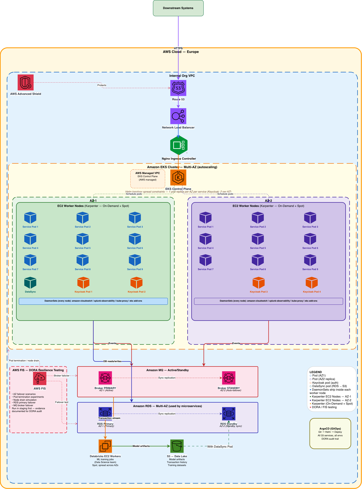

How I architected a production-grade fraud detection platform on Amazon EKS at Rabobank — 33 microservices, Terraform-first IaC, GitOps deployment, and DORA compliance — starting from zero EKS experience.
Rabobank needed a new cloud-native platform to run its fraud detection software — a distributed system of 33 microservices performing real-time transaction scoring at sub-second latency. The software vendor had a clear recommendation: Amazon EKS. At the time, EKS was new territory for our team. We had deep AWS and ECS experience from previous work, but Kubernetes at this scale was a different beast entirely.
The platform had to satisfy two competing constraints simultaneously: financial-grade reliability and operational compliance. Rabobank operates under DORA regulation — every change to production infrastructure must be auditable, reversible, and documented. That constraint shaped every architectural decision we made.
The platform runs on a single EKS cluster spanning two availability zones (eu-west-1a and eu-west-1b), with a two-tier node strategy: a Managed Node Group (On-Demand, always-on) bootstraps the cluster and hosts critical system DaemonSets, while Karpenter dynamically provisions application nodes — On-Demand for latency-sensitive scoring services, Spot for batch and ML workloads. ArgoCD drives all deployments via GitOps. Every AWS resource — the EKS cluster, VPC, IAM roles, RDS, Amazon MQ, ECR — is defined in Terraform. No manual console changes, ever.
Pods are distributed across AZs using Kubernetes topology spread constraints configured in Helm — each service runs one replica per zone, so the platform survives an AZ failure without any manual intervention. Keycloak (authentication) runs four pods — two per AZ — to handle the higher session load. Amazon MQ and RDS are each deployed as Multi-AZ pairs with automatic failover.

Full platform architecture — Route 53 → NLB → Nginx Ingress → EKS Multi-AZ (Karpenter) → Amazon MQ → RDS Multi-AZ → Databricks / S3 data layer
Amazon EKS Karpenter ArgoCD Helm Terraform Databricks EC2 GitOps AWS IAM / IRSA Nginx Ingress Amazon MQ Amazon RDS Multi-AZ Keycloak AWS FIS Amazon CloudWatch CloudWatch EKS Addon Splunk AWS VPC k9s
The fraud detection software vendor mandated Kubernetes. Our prior work at Rabobank and WCC had been primarily ECS-based, so this was a deliberate step into new territory. The vendor's software assumed Kubernetes-native primitives — custom resources, namespace isolation, pod-level networking — that don't translate cleanly to ECS.
Rather than fight the abstraction, we leaned in. We learned EKS on the job, structured everything for observability from day one, and built documentation as we went so the knowledge wouldn't live in a single person's head.
Every resource — the EKS cluster, VPC, IAM roles, node pools, Karpenter NodePools, ALB, RDS, ECR — is defined in Terraform. This was non-negotiable from the start, and it paid off repeatedly: when the solo operation period hit, the Terraform state was the single source of truth. No undocumented manual resources, no drift.
The cluster runs two distinct node tiers working together. A Managed Node Group (On-Demand,
always-on, one node per AZ) handles cluster bootstrap and hosts system-level DaemonSets that must run on
every node and cannot tolerate Spot interruptions: amazon-cloudwatch (Container Insights),
the Splunk log forwarder, kube-proxy, and other EKS add-ons. These nodes are small and
fixed — their purpose is to make the cluster operational, not to run application workloads.
Karpenter handles everything else. It provisions application nodes dynamically on pending pod events — in seconds, not minutes — using two NodePools:
This split kept compute costs down significantly while protecting the real-time path. The Managed Node Group ensured the cluster's own observability (CloudWatch, Splunk) was never at risk from a Spot interruption.
Rather than running dedicated "primary" and "standby" pod pairs, we distributed replicas across AZs using
Kubernetes topology spread constraints configured in each service's Helm chart. The
pattern is simple: maxSkew: 1, topologyKey: topology.kubernetes.io/zone,
whenUnsatisfiable: DoNotSchedule. EKS and Karpenter enforce the spread automatically — if
eu-west-1a goes down, pods in eu-west-1b continue serving with no manual intervention.
Every decision on this platform involved a deliberate trade-off. Here are the most significant ones:
| Decision | What We Chose | Benefit | Trade-off |
|---|---|---|---|
| Orchestrator | EKS over ECS | Full Kubernetes ecosystem, vendor-supported, ArgoCD native | Higher initial complexity — IRSA, CoreDNS tuning, node lifecycle |
| Node strategy | Managed Node Group + Karpenter | Cost efficiency, right-sized nodes, Spot for batch workloads | Two node tiers to reason about; Karpenter requires careful NodePool design |
| Deployment model | GitOps (ArgoCD) | Full audit trail, DORA compliance, rollback via Git revert | Every change must go through Git — no fast hotfixes via kubectl |
| Compute for scoring | On-Demand only for real-time path | Eliminates Spot interruption risk for sub-200ms SLA | Higher compute cost vs Spot |
| Ingress | Nginx Ingress over AWS ALB Ingress | Fine-grained routing control, Helm-native configuration | Additional component to manage; ALB is more AWS-native |
| IaC | Terraform-only, no console | Single source of truth, reproducible, auditable | Every change requires a plan/apply cycle — no quick console fixes |
Reliability was not an afterthought — it was tested using AWS Fault Injection Simulator (FIS) before production sign-off. Here is what the platform does under each failure scenario:
| Failure Scenario | What Happens | Recovery Time | Tested With |
|---|---|---|---|
| AZ-a unavailable | ALB stops routing to AZ-a. Pods in AZ-b continue serving. Karpenter provisions replacement nodes in AZ-b. | < 30 seconds | AWS FIS AZ outage experiment |
| Spot node interrupted | Karpenter receives 2-minute warning. Pods gracefully migrated to available nodes before reclaim. On-Demand fallback if no Spot available. | < 2 minutes | AWS FIS Spot interruption |
| Pod OOM / crash loop | Kubernetes restarts the pod automatically. Topology spread constraint ensures other AZ continues serving. | < 10 seconds | kubectl delete pod + monitoring |
| RDS Primary failure | Multi-AZ standby promoted automatically. Connection string unchanged (CNAME). | 60–120 seconds | AWS FIS RDS failover |
| Amazon MQ broker failure | Active/Standby failover. Consumers reconnect automatically via failover URL. | < 30 seconds | AWS FIS + manual broker stop |
| ArgoCD sync failure | Deployment halted. Previous version continues running. Alert fired. Manual review required. | No impact to running services | Simulated bad Helm values push |
Managing Helm chart configuration for 33 microservices across multiple environments — dev, staging, and production — sounds like a bookkeeping problem. It isn't. It's an architectural problem that breaks your deployment model if you get it wrong.
Early on, the naive approach was one values.yaml per service per environment. That's 99+
files before you've deployed anything to production. Changes to a shared configuration (an image registry
URL, a resource limit policy) required touching dozens of files. Drift between environments was invisible
until something broke in production that worked fine in staging.
ArgoCD ApplicationSets drove deployment from this structure — each application declared its own path to the relevant Helm values, while the majority of configuration was inherited from the base and environment layers. A change to the base propagated to all 33 services consistently. Environment-specific values stayed isolated. Service-specific exceptions were immediately visible as deliberate divergences, not hidden drift.
The fraud detection platform has two distinct processing paths: real-time transaction scoring (EKS microservices) and ML model training with batch scoring (Databricks). These run on separate infrastructure and are owned by different teams.
Databricks runs on EC2 worker nodes provisioned across multiple AZs and is owned entirely by the Data Science team — they manage their own jobs, clusters, and model training pipelines without needing Kubernetes expertise. My role was the AWS integration: VPC connectivity, IAM roles for cross-service access, S3 permissions for the data lake, and ensuring the Databricks EC2 workers were correctly placed within the VPC to reach the EKS services they depend on.
The training pipeline ingests historical transaction data from the S3 data lake, trains and validates new fraud model versions, and publishes model artifacts back to S3. The real-time scoring microservices on EKS load model versions from S3 at startup and serve inference on live transactions — targeting the sub-200ms p99 latency requirement.
DORA regulation (Digital Operational Resilience Act) requires financial institutions to demonstrate that changes to production systems are controlled, traceable, and reversible. This isn't optional at Rabobank. The audit requirements shaped every layer of the delivery pipeline.
| DORA Requirement | How We Satisfied It |
|---|---|
| Change audit trail | Every deployment is a Git commit — author, timestamp, what changed, and a PR review before merge. ArgoCD records the sync state for every deployment. |
| Rollback capability | GitOps means rollback is a Git revert. ArgoCD can roll back to any previous sync state in seconds. No manual steps, no console access required. |
| Change approval | Pull request required for any change to infrastructure or application config. ArgoCD only syncs what Git says — no direct kubectl apply to production. |
| Environment segregation | Namespace isolation in EKS. Separate Terraform workspaces per environment. ArgoCD projects scoped by environment with RBAC. |
| Resilience testing | AWS Fault Injection Simulator (FIS) was used to run structured disaster recovery scenarios as required by DORA — AZ failover, pod termination, node drain, RDS primary failover, and Amazon MQ broker failover. Each scenario was run in staging first, with documented pass/fail evidence, before sign-off for production. |
The key insight is that GitOps and DORA are naturally aligned. GitOps gives you the audit trail, the approval gates, and the rollback mechanism that compliance requires — not as bolt-on process, but as the default behaviour of the system.
kubectl was slow — switching between
describe, logs, exec, and event streams across namespaces
takes time when you're hunting a live incident. k9s's interactive TUI collapsed that workflow
dramatically. Watching pod restarts, log streaming, and event correlation in a single view is a
meaningful productivity difference in a 33-service cluster.